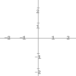
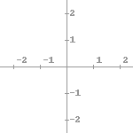
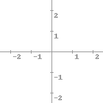
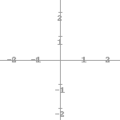
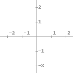
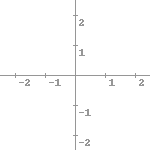

Cartesius is a small library for drawing 2d coordinate system images. More on http://github.com/tkrajina/cartesius
Lines of different colors:
Function math.sin from -4 to 5:

Same function, but with custom coordinate system bounds:

Line function and normal function but with filled graph:

Previous example with grid behind graphs:

Two functions:

Two functions with transparend grid over it:

Key-value graphs:

50 random circles:

Another example with circles:

Circles with horizontal grid:

Circles with horizontal grid every 2:

Circles with vertical grid every 0.5:

Axis with custom label positions, vertical axes has points every 0.25, horizontal every 1.0:

Axis with custom colors:

Two horizontal grids:

Labels on different positions:

   
  
Test with hidden axis: